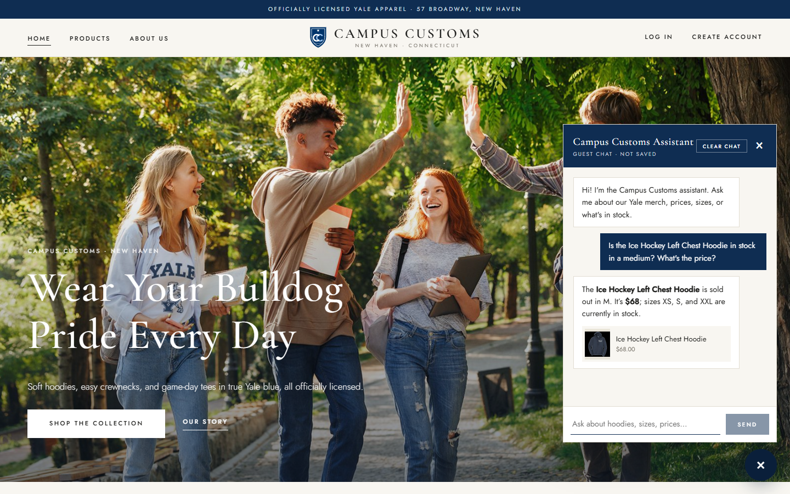
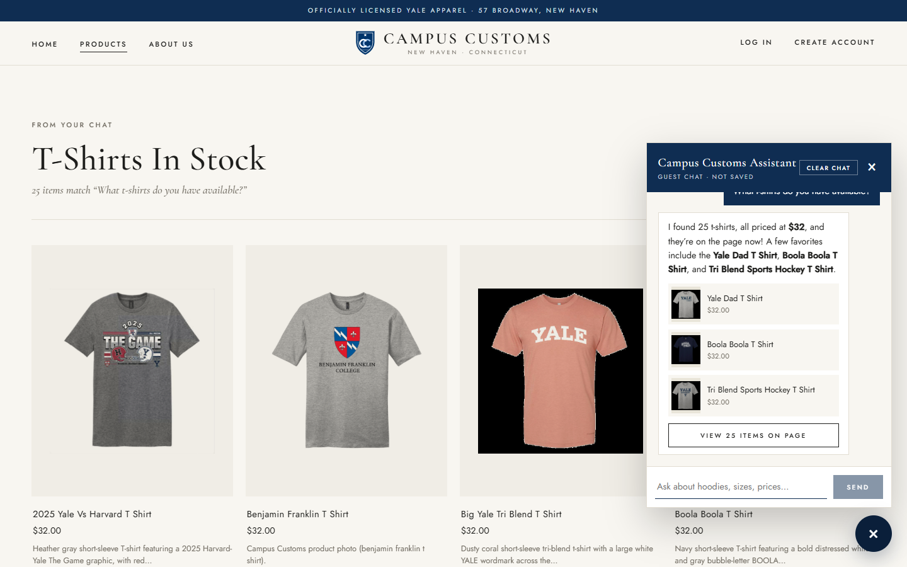
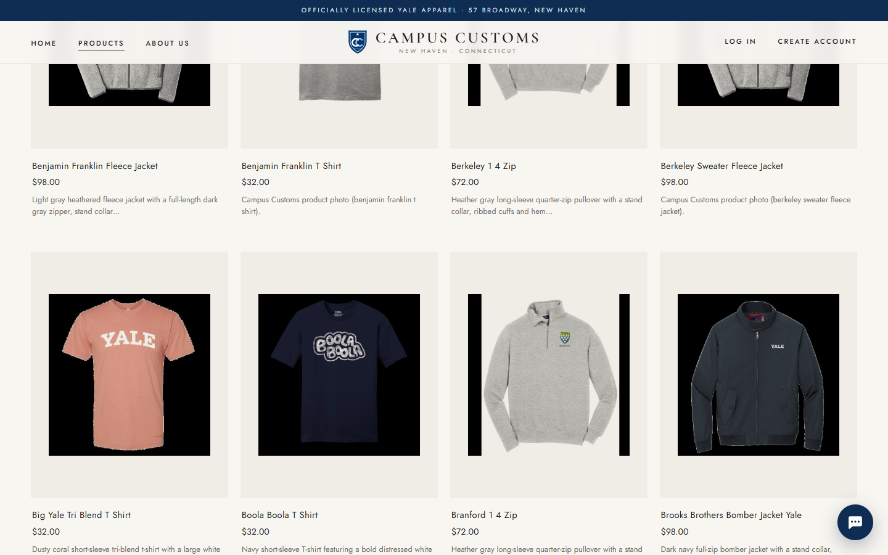
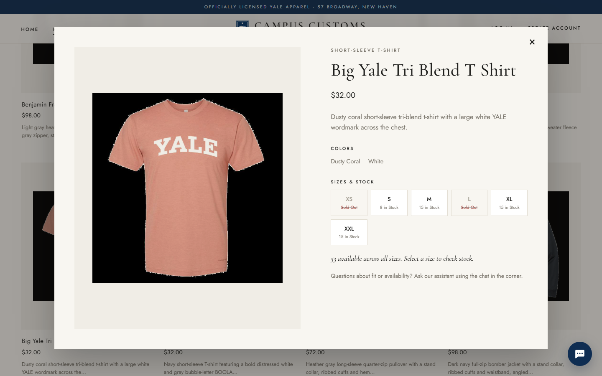

Campus Customs — App Check
1. Chat Checks an Item's Stock and Price Pass

The assistant looked the item up in the database and answered honestly: it is sold out in M, costs
$68, and XS, S, and XXL are in stock. It also added a clickable product card. Every fact matches the
catalogue and inventory tables:
| Size | XS | S | M | L | XL | XXL | Price |
|---|---|---|---|---|---|---|---|
| Database qty | 20 | 8 | 0 | 0 | 0 | 25 | $68.00 |
2. Category Question Updates the Page with Product Cards Pass

/products?results=chat.The agent returned structured matches, and the site filled the Products page with a “T-Shirts In Stock” banner and 25 product cards. That matches the 25 T-shirts in the database, all $32 as the reply says. The chat also shows 3 highlights and a “View 25 Items on Page” button, and Return to Full Menu (not visible behind the chat) restores all 102 products.
3. Product Opens in a Floating Window Over the Previous Page Pass




The single-item view opened as a floating window showing a large image, price, description, colors, and live stock by size (XS and L sold out,
matching the database). The grid stayed in place behind it. Closing with × returned to /products at the same scroll
position (about 1,400 px), so the shopper doesn't lose their place.